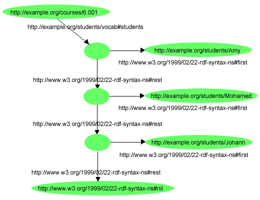

To represent collections of resources, RDF provides three ways as subclass of rdfs:Container.
The first member of container is the value of the property rdf:_1, the second member is the value of the property rdf:_2, and so on. This kind of property, rdf:_nnn, is called an ordinal property.
Figure 7.1 is an example of a collection of rdf:Bag, which is taken from Jena tutorial.
Figure 7.1 An Example of rdfs:Bag (from Jena Tutorial)
Then, the followings encode Figure 7.1.
gx-user(3): (defpackage somewhere)
#<The somewhere package>
gx-user(4): (defpackage vCard)
#<The vCard package>
gx-user(5): (defIndividual somewhere::JohnSmith
(rdf:about "http://somewhere/JohnSmith")
(vCard::FN "John Smith")
(vCard::N (rdfs:Resource (vCard::Given "John")
(vCard::Family "Smith"))))
Warning: Entail by rdf1: vCard::FN rdf:type rdf:Property.
Warning: Entail by rdf1: vCard::N rdf:type rdf:Property.
Warning: Entail by rdf1: vCard::Given rdf:type rdf:Property.
Warning: Entail by rdf1: vCard::Family rdf:type rdf:Property.
#<|rdfs:Resource| somewhere:JohnSmith>
gx-user(6): (defIndividual somewhere::BeckySmith
(rdf:about "http://somewhere/BeckySmith")
(vCard:FN "Becky Smith")
(vCard:N (rdfs:Resource (vCard:Given "Becky")
(vCard:Family "Smith"))))
#<|rdfs:Resource| somewhere:BeckySmith>
gx-user(7): (defIndividual _:bag01 (rdf:type rdf:Bag)
(rdf::_1 somewhere:BeckySmith)
(rdf::_2 somewhere:JohnSmith))
Warning: Entail by rdf1: rdf:_1 rdf:type rdf:Property.
Warning: Entail by rdf1: rdf:_2 rdf:type rdf:Property.
#<rdf:Bag common-lisp:nil>
gx-user(8): (get-form _:bag01)
(rdf:Bag (rdf:type rdf:Bag)
(rdf:_1 somewhere:BeckySmith) (rdf:_2 somewhere:JohnSmith))
In SWCLOS, ordinal properties are initially not defined. However, if you put them in proper position, it is automatically defined as an instance of rdfs:ContainerMembershipProperty.
In Figure 7.1, the top node is a blank node, then we put it a blank node identifier _:bag01. Note that a blank node object is bound to a designated blank node ID. In SWCLOS, a node name is not mandatory even if in the top level node, but it is preferable to put a node identifier for convenience.
In RDF semantics, we can make an instance of rdf:List with rdf:first, rdf:rest and rdf:nil. Figure 7.2 shows an example of list structure in RDF, which is from RDF Primer.

Figure 7.2 An RDF Collection (list structure) (from RDF Primer)
This RDF graph is encoded as follows straightforwardly.
gx-user(2): (defpackage eg (:documentation "http://example.org/"))
#<The eg package>
gx-user(3): (defpackage vocab
(:documentation "http://example.org/students/vocab/"))
#<The vocab package>
gx-user(4): (defIndividual eg::courses/6.001
(rdf:about "http://example.org/courses/6.001")
(vocab::students
(rdf:List
(rdf:first
(rdfs:Resource (rdf:about "http://example.org/students/Amy")))
(rdf:rest
(rdf:List
(rdf:first
(rdfs:Resource (rdf:about "http://example.org/students/Mohamed")))
(rdf:rest
(rdf:List
(rdf:first
(rdfs:Resource (rdf:about "http://example.org/students/Johann")))
(rdf:rest rdf:nil))))))))
Warning: Entail by rdf1: vocab::students rdf:type rdf:Property.
#<|rdfs:Resource| eg:courses/6.001>
gx-user(5): (pprint (get-form eg:courses/6.001))
(|rdfs:Resource| eg:courses/6.001 (rdf:about #<uri http://example.org/courses/6.001>)
(vocab:students
(rdf:List
(rdf:first
(rdfs:Resource (rdf:about #<uri http://example.org/students/Amy>)))
(rdf:rest
(rdf:List
(rdf:first
(rdfs:Resource (rdf:about #<uri http://example.org/students/Mohamed>)))
(rdf:rest
(rdf:List
(rdf:first
(rdfs:Resource (rdf:about #<uri http://example.org/students/Johann>)))
(rdf:rest rdf:nil))))))))
You can get any data in list using path traverse function '->' as follows.
gx-user(6): (get-form (-> eg:courses/6.001 vocab:students rdf:rest
rdf:rest rdf:first))
(rdfs:Resource (rdf:about #<uri http://example.org/students/Johann>))
gx-user(7): (-> eg:courses/6.001 vocab:students rdf:rest rdf:rest rdf:rest)
#<rdf:List rdf:nil>
However, using rdf:List is very tedious in SWCLOS. We can use the lisp list to represent a collection of resources in SWCLOS. You may represent the collection of students as follows, whereas the RDF graph is not equal to Figure 7.2.
gx-user(7): (defIndividual eg::courses/6.002
(rdf:about "http://example.org/courses/6.002")
(vocab::students
(rdfs:Resource (rdf:about "http://example.org/students/Amy"))
(rdfs:Resource (rdf:about "http://example.org/students/Mohamed"))
(rdfs:Resource (rdf:about "http://example.org/students/Johann"))))
#<|rdfs:Resource| eg:courses/6.002>
gx-user(8): (get-form eg:courses/6.002)
(|rdfs:Resource| eg:courses/6.002 (rdf:about "http://example.org/courses/6.002")
(vocab:students (rdfs:Resource (rdf:about "http://example.org/students/Amy"))
(rdfs:Resource (rdf:about "http://example.org/students/Mohamed"))
(rdfs:Resource (rdf:about "http://example.org/students/Johann"))))
gx-user(9): (-> eg:courses/6.002 vocab:students)
(#<rdfs:Resource common-lisp:nil> #<rdfs:Resource common-lisp:nil> #<rdfs:Resource common-lisp:nil>)
gx-user(10): (mapcar #'get-form *)
((rdfs:Resource (rdf:about "http://example.org/students/Amy"))
(rdfs:Resource (rdf:about "http://example.org/students/Mohamed"))
(rdfs:Resource (rdf:about "http://example.org/students/Johann")))
Even though this input form does not contain rdf:first and rdf:rest, it is very easy for lisp programmers to imagine the above forms from the list structure in Figure 7.2.